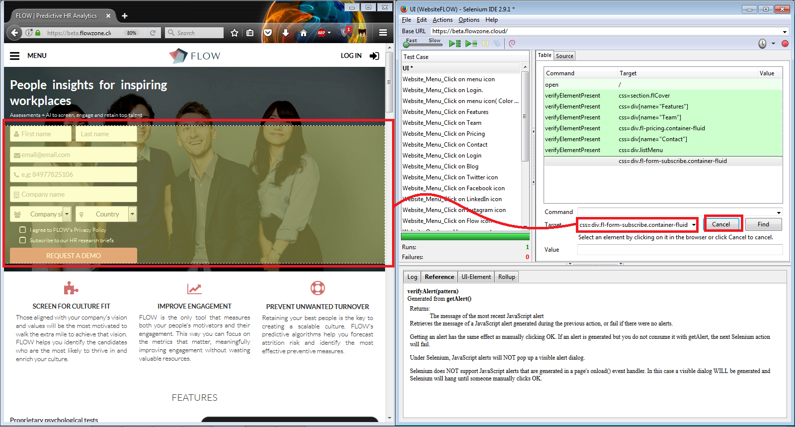
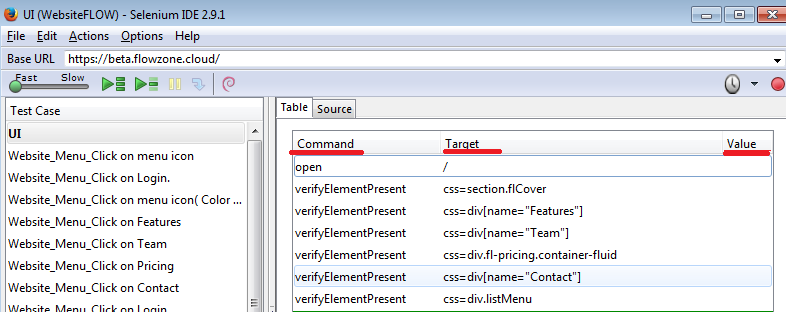
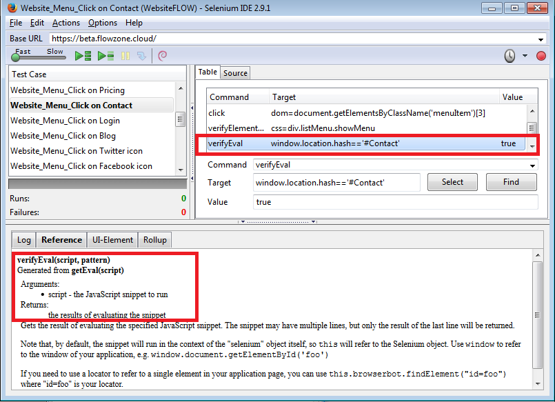

Test Automation for Web Apps - Why/When/How
Why
- Frequent regression testing
- Rapid feedback to developers
- Virtually unlimited iterations of test case execution
- Support for Agile and extreme development methodologies
- Disciplined documentation of test cases
- Customized defect reporting
- Finding defects missed by manual testing
When
- UI will change in the future
- Project is short of time => building automated tests eats time
- Some test cases is really hard to automate (feeling, readability, responsiveness, external function (send emails)
How - Introducing Selenium
It is a set of different tools
Selenium IDE
- Tool for recording and playing tests
- Translate recorded test into many programming languages
- For Firefox only
Selenium Remote Control (Selenium 1)
- Based on JavaScript injection
- Support all browsers
- Limited function due to JavaScript security restriction
- Outdated

Selenium WebDriver (Selenium 2)
- Based on calling browsers' API
- Support some certain browsers
- Faster execution due to native calls
- Backward compatibility with Selenium 1
Selenium Grid
- Scale Selenium 1 solution
- Run test parallely on different machines
=> In this tutorial we will use Selenium IDE and Selenium WebDriver to test FLOW Project website
Let's see it in action
We are going to use SeleniumIDE to test FLOW project website:
First, download SeleniumIDE here
After that, download the project folder here, and unzip the project folder
Open SeleniumIDE as below:


Try modifying the speed and running the test:
Try selenium recording function
First pick one test case from Flow project test-cases specification
Now click the record button from the IDE and perform the actions you are suppose to do. Then click the button again to stop the record.

Try playing back to see the result!!
Insert new commands
Using the element locator

Now save the test case using Ctrl + S
Export/View test case in different formats:
Selenese is a simplified script that represent automated test cases, and is translatable to other programming languages
This is how it looks like
There are three types of Selenese command: Actions, Accessors, and Assertions
Actions
- Things like “click this link” and “select that option”. If an Action fails, or has an error, the execution of the current test is stopped.
- Many Actions can be called with the “AndWait” suffix, e.g. “clickAndWait”. This suffix tells Selenium that the action will cause the browser to make a call to the server, and that Selenium should wait for a new page to load.
Accessors
- Examine the state of the application and store the results in variables, e.g. “storeTitle”. They are also used to automatically generate Assertions.
Assertions
- Verify that the state of the application conforms to what is expected. (E.g: “make sure the page title is X” and “verify that this checkbox is checked”)
3 parts of a selenese command
Selenium commands are simple, they consist of the command and two parameters. For example:

Locating Elements
How to provide the right value to the "Target" form. Let's look at this example code:
Locating by Id
<html>
<body>
<form id="loginForm">
<input name="username" type="text" />
<input name="password" type="password" />
<input name="continue" type="submit" value="Login" />
<input name="continue" type="button" value="Clear" />
</form>
</body>
<html>id=loginFormLocating by Name
<html>
<body>
<form id="loginForm">
<input name="username" type="text" />
<input name="password" type="password" />
<input name="continue" type="submit" value="Login" />
<input name="continue" type="button" value="Clear" />
</form>
</body>
<html>name=username
name=continue value=Clear
name=continue Clear
name=continue type=button
Locating by Link Text
<html>
<body>
<p>Are you sure you want to do this?</p>
<a href="continue.html">Continue</a>
<a href="cancel.html">Cancel</a>
</body>
<html>link=Continue
link=Cancel
Locating by Identifiers
<html>
<body>
<form id="loginForm">
<input name="username" type="text" />
<input name="password" type="password" />
<input name="continue" type="submit" value="Login" />
</form>
</body>
<html>identifier=loginForm
identifier=password
identifier=continue
continueLocating by XPath
<html>
<body>
<form id="loginForm">
<input name="username" type="text" />
<input name="password" type="password" />
<input name="continue" type="submit" value="Login" />
<input name="continue" type="button" value="Clear" />
</form>
</body>
<html>- xpath=/html/body/form[1] - Absolute path (would break if the HTML was changed only slightly)
- //form[1] - First form element in the HTML
- xpath=//form[@id='loginForm'] - The form element with attribute named ‘id’ and the value ‘loginForm’
- xpath=//form[input/@name='username'] - First form element with an input child element with attribute named ‘name’ and the value ‘username’
- //input[@name='username'] - First input element with attribute named ‘name’ and the value ‘username’
- //form[@id='loginForm']/input[1] - First input child element of the form element with attribute named ‘id’ and the value ‘loginForm’
- //input[@name='continue'][@type='button'] - Input with attribute named ‘name’ and the value ‘continue’ and attribute named ‘type’ and the value ‘button’
- //form[@id='loginForm']/input[4] - Fourth input child element of the form element with attribute named ‘id’ and value ‘loginForm’
Locating by DOM
<html>
<body>
<form id="loginForm">
<input name="username" type="text" />
<input name="password" type="password" />
<input name="continue" type="submit" value="Login" />
<input name="continue" type="button" value="Clear" />
</form>
</body>
<html>
dom=document.getElementById('loginForm')
dom=document.forms['loginForm']
dom=document.forms[0]
document.forms[0].username
document.forms[0].elements['username']
document.forms[0].elements[0]
document.forms[0].elements[3]
Locating by CSS
<html>
<body>
<form id="loginForm">
<input name="username" type="text" />
<input name="password" type="password" />
<input name="continue" type="submit" value="Login" />
<input name="continue" type="button" value="Clear" />
</form>
</body>
<html>
css=form#loginForm
css=input[name="username"]
css=input.required[type="text"]
css=input.passfield
css=#loginForm input[type="button"]
css=#loginForm input:nth-child
Matching Text Patterns
There are selenium commands which require patterns insteadOf locators, for example:verifyTextPresent, verifyTitle, verifyAlert, assertConfirmation, verifyText, and verifyPrompt.
How to provide the right "Value" for text-related command:
To be short: using exact value or regular expression!! Example:| Command | Target | Value |
|---|---|---|
| open | http://weather.yahoo.com/forecast/USAK0012.html | |
| verifyTextPresent | regexp:Sunrise: *[0-9]{1,2}:[0-9]{2} [ap]m |
Using JavaScript inside Selenese
Let's look at this example below. There's some command require a script as its parameter!! Ok, let's just install NodeJS first and then WebDriver introduction will come in the mean time...
WebDriver is designed to provide a simpler, more concise programming interface in addition to addressing some limitations in the Selenium-RC API. WebDriver’s goal is to supply a well-designed object-oriented API that provides improved support for modern advanced web-app testing problems.
Let's try writting and running some code before introducing stuffs
Now read the manual on the web-automation-test repository to install the environment and start the demo test script-
Copy this path:
<your project folder>/DriverServer - Click on the icon
- Search "environment variable"